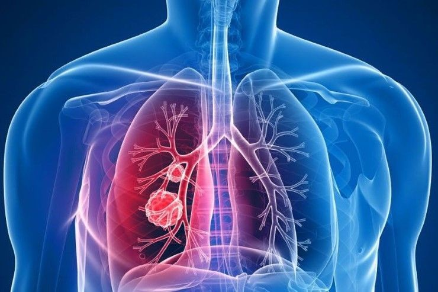
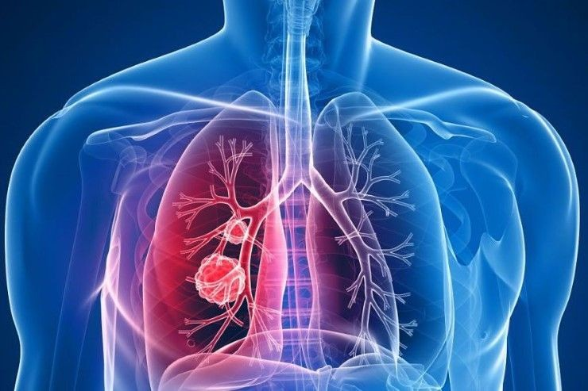

โดย นักเรียนโรงเรียนสวนกุหลาบวิทยาลัย นนทบุรี


ติดต่อเรา
|
| การศึกษาสารยับยั้งโรคมะเร็งและให้กำลังใจผู้ป่วย โดย นักเรียนโรงเรียนสวนกุหลาบวิทยาลัย นนทบุรี |
|
|
095 - 482 - 2452 ติดต่อเรา |
|---|
เกี่ยวกับโรคมะเร็งปอด |
การเกิดโรคมะเร็งปอด |
การให้กำลังใจผู้ป่วย |
|---|
มะเร็งปอด
มะเร็งปอด (Lung cancer) คือ โรคที่เซลล์ของเนื้อปอดมีการแบ่งตัวมากผิดปกติอย่างรวดเร็วจนไม่สามารถควบคุมได้ ทำให้เกิดเป็นกลุ่มก้อนของเซลล์ที่ผิดปกติ ซึ่งจะตรวจพบได้เมื่อมีขนาดใหญ่มีจำนวนมากและแพร่กระจายไปยังอวัยวะอื่นๆของร่างกายแล้ว ผู้ป่วยที่มาพบแพทย์ส่วนใหญ่จะมีอาการในระยะที่โรคลุกลามไปมากแล้ว อย่างไรก็ตาม ไม่ว่าจะตรวจพบครั้งแรกในระยะใดก็มีหนทางในการดูแลรักษาและส่งผลให้ผู้ป่วยมีชีวิตที่ยืนยาวหรือมีคุณภาพชีวิตที่ดีขึ้นได้แต่ถ้าโชคดีตรวจพบได้ในระยะแรกก็สามารถรักษาโรคนี้ให้หายได้ด้วยการผ่าตัด โรคมะเร็งปอดเป็นโรคมะเร็งที่พบได้บ่อยมากทั้งในคนไทยและทั่วโลก โดยพบได้มากเป็นอันดับที่ 2 ของมะเร็งในผู้ชาย และเป็นอันดับที่ 4 ของมะเร็งในผู้หญิง จัดเป็นโรคของผู้ใหญ่ที่มีความรุนแรงสูงมาก เพราะเป็นสาเหตุการเสียชีวิตเป็นอันดับ 1 ของโรคมะเร็งทั้งหมด โดยทั่วไปพบโรคนี้ได้สูงตั้งแต่อายุ 35 ปีขึ้นไป ซึ่งจะพบได้มากในช่วงอายุประมาณ 50-75 ปี และพบได้ในผู้ชายบ่อยกว่าผู้หญิงประมาณ 2-3 เท่า ในปัจจุบันพบผู้ป่วยใหม่เป็นโรคมะเร็งปอดสูงถึงประมาณปีละ 1.1 ล้านคน ส่วนในประเทศไทยในช่วงปี พ.ศ.2544-2546 พบโรคนี้ได้ในผู้ชาย 24.9 รายต่อประชากรชาย 100,000 คน และในผู้หญิง 9.7 รายต่อประชากรหญิง 100,000 รายชนิดของมะเร็งปอด
มะเร็งปอดมีอยู่หลายชนิด แต่ชนิดที่พบได้บ่อย ๆ จะมีอยู่ด้วยกัน 2 ชนิด คือ มะเร็งปอดชนิดไม่ใช่เซลล์ขนาดเล็ก (Non-small cell lung cancer – NSCLC) เป็นชนิดที่พบได้บ่อยกว่าชนิดเซลล์ขนาดเล็ก (พบได้ประมาณ 75-80% ของมะเร็งปอดทั้งหมด) แต่แพร่กระจายได้ช้ากว่า มักลุกลามอยู่ในปอดและเนื้อเยื่อข้างเคียง ต่อจากนั้นจึงลุกลามเข้าต่อมน้ำเหลืองที่ขั้วปอดและในช่องอก แล้วจึงแพร่กระจายเข้าสู่กระแสเลือด มะเร็งปอดชนิดนี้แบ่งออกได้เป็น 3 ชนิดย่อย คือ ชนิดสะความัสเซลล์ (Squamous cell carcinoma) เซลล์ชนิดนี้จะพบได้ที่เยื่อบุผิวของหลอดลม โดยพบได้มากในผู้ชายและผู้สูงอายุ (ทั้งชายและหญิง) มีความเกี่ยวข้องอย่างมากกับการสูบบุหรี่ มักมีจุดเริ่มต้นที่ท่อทางเดินหายใจขนาดใหญ่ จึงทำให้ผู้ป่วยมีอาการไอเรื้อรัง อาจไอเป็นเลือด หรือมีอาการปอดบวมได้ เพราะก้อนมะเร็งไปอุดท่อของหลอดลมจนทำให้ไม่สามารถไอเอาเสมหะออกมาได้ เป็นมะเร็งชนิดที่พบได้ประมาณ 40-45% ของมะเร็งปอดทั้งหมด ชนิดเซลล์ขนาดใหญ่ (Large cell carcinoma) เซลล์ชนิดนี้จะพบได้ที่ผิวนอกของเนื้อปอด มักจะเป็นที่บริเวณขอบริม ๆ แพร่กระจายได้เร็วมากจนการตรวจวินิจฉัยทำได้ไม่ทันกับการเจริญของโรคเป็นมะเร็งชนิดที่พบได้ประมาณ5-10%ของมะเร็งปอดทั้งหมดชนิดอะดีโน (Adenocarcinoma) เซลล์มะเร็งชนิดนี้จะพบได้ที่ต่อมสร้างน้ำเมือกของปอด เป็นมะเร็งชนิดที่พบได้บ่อยประมาณ 25-30% ของมะเร็งปอดทั้งหมด พบได้บ่อยในผู้หญิงและในผู้ที่ไม่สูบบุหรี่ 
